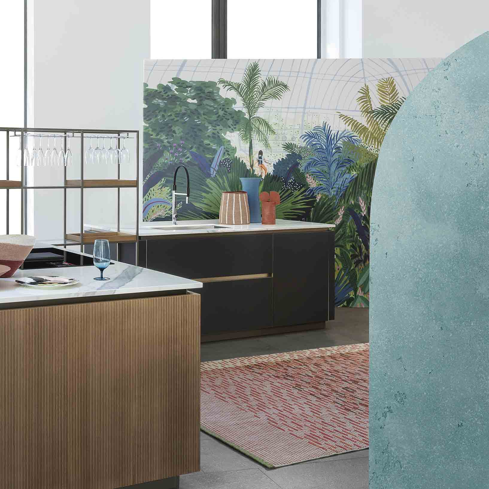
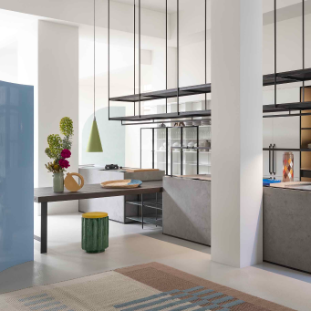
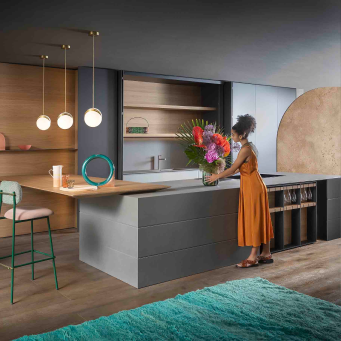
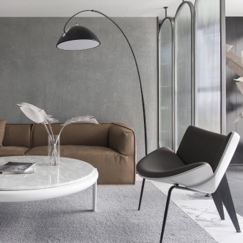
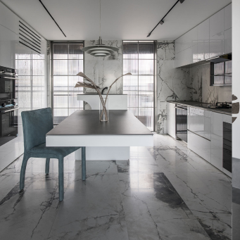
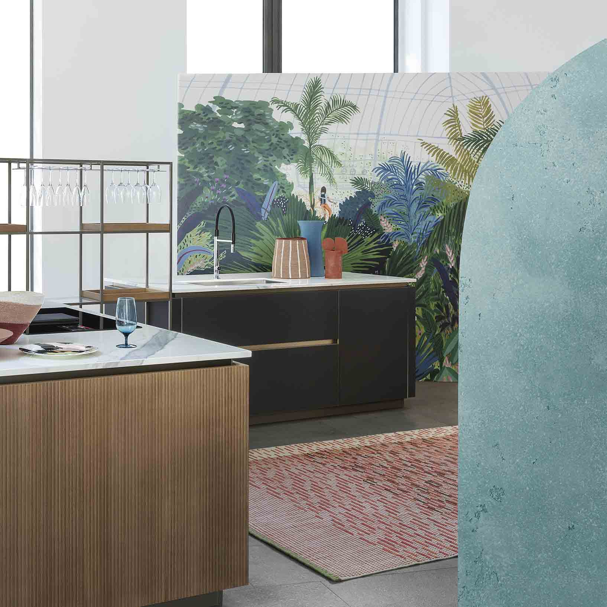
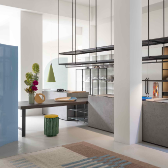
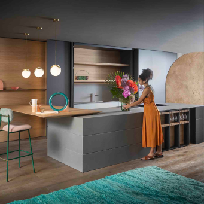
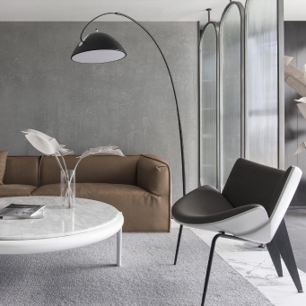
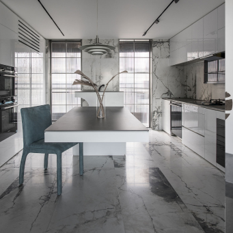

Luxusní Dekorativní Stěrky a Omítky
EXKLUZIVNÍ DESIGN INTERIÉRŮ
 










Dekorativní stěrka, známá také jako dekorativní omítka, je umělecká technika v oblasti interiérového designu a architektury, která získala na popularitě díky své schopnosti přinést do interiérů jedinečný vzhled a atmosféru. Tato metoda umožňuje vytvářet různé textury a vzory na povrchu stěn, stropů, podlah a dokonce i nábytku, čímž se vytváří esteticky přitažlivý a individuální design.
Dekorativní stěrka může být vyrobena z různých materiálů, včetně vápence, polymerů, sádry a speciálních směsí, které byly vyvinuty pro dosažení vysoké odolnosti a estetického půvabu. Tato technika je spojena s bohatou historií a vývojem, který se datuje do starověkých civilizací, kde byla využívána k zdobení chrámů a paláců.
Historie dekorativní stěrky sahá až do starověkého Egypta, kde byla používána pro zdobení hrobek a paláců faraonů. Dále se tato technika rozšířila do Řecka a Římské říše, kde byla používána k vytváření realistických freskových maleb na stěnách.